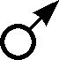

与年龄相联系的性别变化
生物学家都熟悉，动物和植物中有几个例子，其个体最初表现雄性作用，以后又表现雌性作用，或者先雌后雄。不过性转化发生的特殊例子都是那些已经知道是原来被染色体组合决定了的性别，据说在稀有的情形下，又转化成了另一性别，而染色体组合却没有改变。
据Nansen和Cunningham的报道，盲鳗Myxine幼龄时为雄性，后来才变成雌性。但是以后两位Schreiners的观察，却指明幼龄的盲鳗虽然是雌雄同体——生殖腺的前端为精巢，后端为卵巢，但在机能上却不是这样。每条盲鳗后来都变成了真正的雄性或者真正的雌性。
饲养剑尾鱼（Xiphophorus helleri）的人们在各个时期内有过雌鱼变雄鱼的报道；虽然至少在一个例子里找到了成熟的精子，不过这些转化了的雌性，究竟产生什么性别的后代，不幸一直毫无记载。近来，Essenberg研究了这种幼鱼生殖腺的发生。刚出生时鱼长8mm，生殖腺处于“中性阶段”，腺内有两种细胞，同由腹膜发生而来。鱼长10mm时，性别分明；雌鱼的原始生殖细胞逐渐变成幼小的卵子，雄鱼的真正生殖细胞（精细胞）仍然从腹膜分化出来。Essenberg在鱼体长达10~26mm的未成熟时期里，记载了74条雌鱼和36条雄鱼，雌鱼里面包括了退化型，即正在从“雌”变“雄”的转化过程中的雌鱼。根据Bellamy的记载，成鱼的性率为75

比25♀。这种变化不像是差等生存力的结果，而是由于性别的转化。这种变化在长达16~27mm的鱼里最普通，但也可以发生在较后的各阶段里。这样，数据指出了几乎有半数的“雌鱼”变成了雄鱼。不过这种说法并不意味着有作用的雌鱼变成了雄鱼，而是说半数的幼龄“雌鱼”由于有了卵巢，于是被认为是雌鱼，这个卵巢以后变成了精巢。最近，据Harms（1926）报道：在剑尾鱼中有一些已经没有生殖力的老龄雌鱼，变成了有作用的雄鱼。这些转化过来的雌鱼，在作为雄鱼繁殖时，只产生雌性后代，这意味着这条鱼如果是同型配子，则其全部有作用的精子都是带有X染色体的。近来，Junker描述了一件奇怪的例子。
具缘石蝇（Perlamarginata）的幼龄雄蝇（图143）经过一个有卵巢的阶段，卵巢内有发育不全的卵子。雄性有一条X染色体和一条Y染色体，雌性有两条X（图144）。当虫发育到成虫时，雄虫的卵巢消失，精巢内产生正常精子。这里，我们必须作出这样的推论：在雄虫的幼龄阶段，一条X的缺乏，不足以抑制卵巢幼发育，但在变成成虫以后，它的染色体组合却发挥了作用。

图143 左侧示具缘石蝇（Perla marginata）；右侧示幼龄雄虫的卵巢和精巢（仿Junker）

图144 具缘石蝇精原细胞、卵原细胞与二倍型雄性卵子的染色体群（仿Junker）